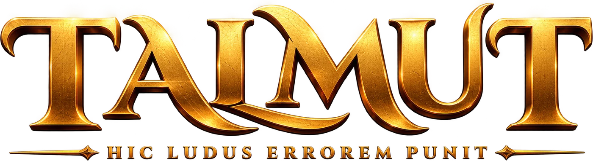
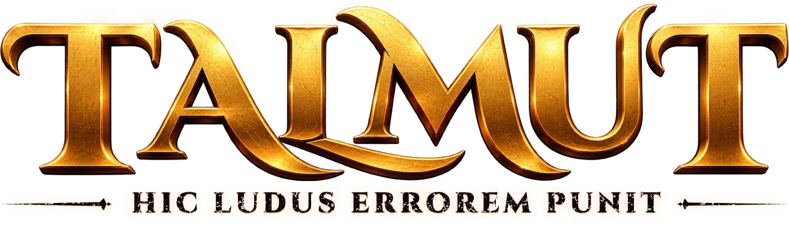

Toca para empezar
S
M
4
2
DEVELOPER STUDIO

PULSA PARA ENTRAR

EN LÍNEA
ONLINE
Partida rápida o sala con amigos
CON APUESTAS
AURUM PERSECUTIO
El ganador se lleva el bote
SIN CONEXIÓN
ARCADE
Contra la máquina
EN LA MESA
LOCAL
Tabla para jugar con baraja real
¿QUIÉN EMPIEZA?
CHUKWUEZE
Un dedo cada uno
3 MINUTOS
APRENDE
Con Juanjo, el Cuervo
Perfil
Personalización
Hitos
Reglas
v6.0 · SM42
5
+
HIC LUDUS
ERROREM
PUNIT
TALMUT
1
2
3
4
5
6
−1
7
8
9
−2
0
OK
0
ES
EN
→
‹
EL CAMINO DE LA MALTESA
Libera al cuervo
★
0
/126
0
Pergamino
Desliza para recorrer el camino · Toca una casilla para leer su crónica
×
JUGAR